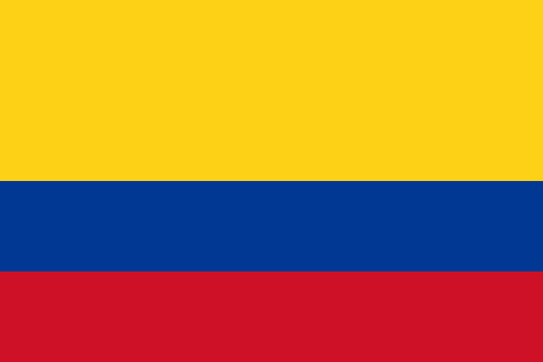

Colombia es un país ubicado en el noroeste de América del Sur y tiene costas sobre el mar Caribe y el océano Pacífico.
Uno de los productos más conocidos del país es el café. En las montañas de departamentos como Caldas, Quindío y Risaralda hay fincas donde se cultiva y se cosecha a mano.
La capital de Colombia es Bogotá. Desde el cerro de Monserrate se puede ver gran parte de la ciudad. En el centro está el barrio de La Candelaria, conocido por sus casas antiguas y sus museos.

¡Oh gloria inmarcesible!
¡Oh júbilo inmortal!
¡En surcos de dolores
el bien germina ya!
Cesó la horrible noche.
La libertad sublime
derrama las auroras
de su invencible luz.
La humanidad entera,
que entre cadenas gime,
comprende las palabras
del que murió en la cruz.
«¡Independencia!» grita
el mundo americano.
Se baña en sangre de héroes
la tierra de Colón.
Pero este gran principio:
«El rey no es soberano»,
resuena, y los que sufren
bendicen su pasión.